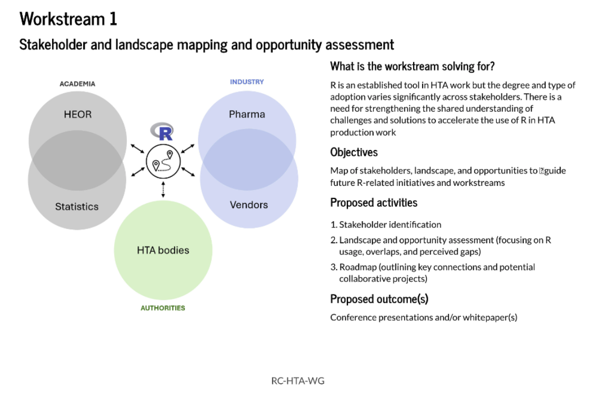
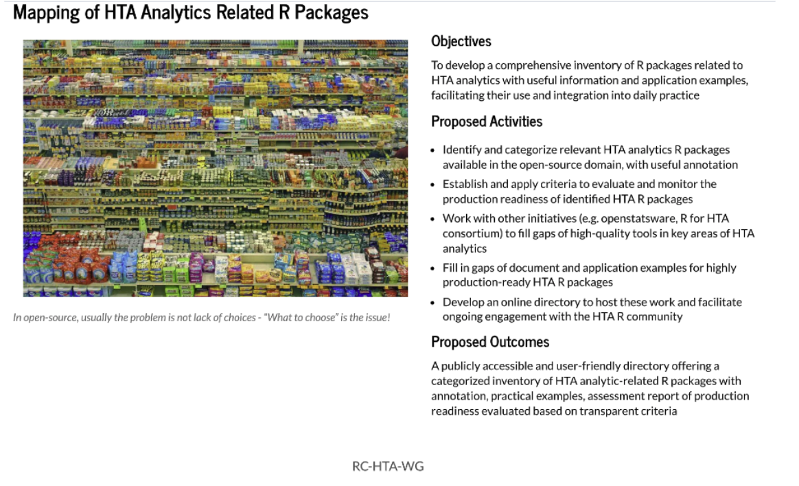

On October 31, 2024, the Health Technology Assessment (HTA) Working Group convened for its first general meeting, marking the beginning of an exciting industry-wide initiative to elevate the role of R within the HTA community. The gathering featured 35 members, including co-chairs and founding members Gregory Chen, Anders Gorst-Rasmussen, Dominic Muston, and Joseph Rickert, with participants bringing varied expertise from across the HTA landscape. Hosted on video, the kickoff set the stage for collaboration, innovation, and tangible impacts on the development and application of R tools in health technology assessments. You can watch the recording here.
Opening Remarks and Vision
 Gregory Chen and Anders Gorst-Rasmussen opened the meeting with a vision of collaboration, emphasizing the importance of a shared, flexible structure within the HTA Working Group. The co-chairs highlighted two initial workstreams designed to channel the group’s efforts without restricting the scope of potential projects. This framework underscores the group’s commitment to evolve in response to member feedback and industry needs.
Gregory Chen and Anders Gorst-Rasmussen opened the meeting with a vision of collaboration, emphasizing the importance of a shared, flexible structure within the HTA Working Group. The co-chairs highlighted two initial workstreams designed to channel the group’s efforts without restricting the scope of potential projects. This framework underscores the group’s commitment to evolve in response to member feedback and industry needs.
Workstream 1: Building Connections Across the HTA Ecosystem
 Anders Gorst-Rasmussen and Dominic Muston introduced the first workstream, focusing on building connections across diverse stakeholders within HTA. This foundational effort aims to foster a common perspective and identify relevant challenges and opportunities. By bridging gaps between different sectors within HTA, Workstream 1 seeks to create a solid framework for addressing complex issues in health technology evaluation and supporting innovation across the industry.
Workstream 2: R Tools for HTA – Identification, Curation, and Education
 Gregory Chen and Joseph Rickert presented Workstream 2, which takes a hands-on approach toward bolstering R’s role in HTA. Key goals include identifying relevant R packages, curating high-quality, production-ready tools, and proactively enhancing documentation and user resources. The working group will also promote these tools through blogs, webinars, and other educational efforts to foster a culture of learning and improvement around R for HTA. The ultimate aim is to ensure that the HTA community has access to well-documented, robust R tools and resources that meet industry needs.
Next Steps: How Members Can Contribute
The HTA Working Group’s GitHub repository serves as the central hub for collaboration, providing access to meeting materials, discussion threads, and project updates. Members are encouraged to engage actively by commenting onIssue #1 with a brief statement about their backgrounds, opening new issues to propose ideas, and suggesting solutions to emerging challenges. This repository promises to be a lively and evolving resource as the working group’s projects advance.
Group Discussion: Setting the Foundation for Future Initiatives
The group discussion allowed members to share insights, generate new ideas, and identify priorities for the working group’s next steps. The discussion was lively and constructive, underscoring the potential of this initiative to drive meaningful contributions to the HTA field.
Upcoming Meeting
The next meeting of the HTA Working Group is scheduled for Wednesday, November 27, 2024, from 17:00 to 18:00 CET. Members are encouraged to join, contribute to ongoing discussions, and help shape the next steps of this impactful initiative. If you have not received an invitation, please reach out to Joseph Rickert via email.
The HTA Working Group has set forth on a promising path, and this first meeting demonstrated the collaborative spirit and commitment to progress that will drive its success. Stay tuned for more updates as the group’s efforts take shape and begin to impact the HTA community.